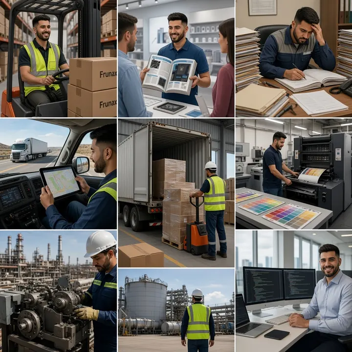

Desarrollo e Implementación
Construimos sitios, aplicaciones, integraciones y soluciones digitales
preparadas para crecer.
Configurar este servicio
Desarrollo e Implementación
Construimos sitios, aplicaciones, integraciones y soluciones digitales
preparadas para crecer.
Configurar este servicio
Portafolio ISM
Proyectos construidos junto a nuestros clientes
Conoce cómo distintas necesidades se transformaron en sitios web,
sistemas y soluciones digitales implementadas por ISM.
Capacidades de ISM Developer
Servicios ISM
Explora cómo podemos ayudarte y configura solo las actividades que realmente necesita tu negocio.
Desarrollo e Implementación
Construimos sitios, aplicaciones, integraciones y soluciones digitales
preparadas para crecer.
Configurar este servicio
 Mantenimiento y Evolución
Mejoramos, actualizamos y optimizamos soluciones existentes para mantenerlas
estables y vigentes.
Configurar este servicio
Mantenimiento y Evolución
Mejoramos, actualizamos y optimizamos soluciones existentes para mantenerlas
estables y vigentes.
Configurar este servicio
 Monitoreo y Observabilidad
Supervisamos disponibilidad, rendimiento y eventos para anticipar problemas
y responder a tiempo.
Configurar este servicio
Monitoreo y Observabilidad
Supervisamos disponibilidad, rendimiento y eventos para anticipar problemas
y responder a tiempo.
Configurar este servicio
 Respaldo y Continuidad Operacional
Protegemos la información y preparamos la recuperación para reducir el impacto
de incidentes.
Configurar este servicio
Respaldo y Continuidad Operacional
Protegemos la información y preparamos la recuperación para reducir el impacto
de incidentes.
Configurar este servicio
 Ciberseguridad y Protección Digital
Fortalecemos accesos, datos y plataformas mediante medidas de seguridad
adaptadas al negocio.
Configurar este servicio
Ciberseguridad y Protección Digital
Fortalecemos accesos, datos y plataformas mediante medidas de seguridad
adaptadas al negocio.
Configurar este servicio
 Soporte y Gestión de Servicios
Organizamos solicitudes, incidentes y seguimiento para una operación
más clara y confiable.
Configurar este servicio
Soporte y Gestión de Servicios
Organizamos solicitudes, incidentes y seguimiento para una operación
más clara y confiable.
Configurar este servicio
Usa “Configurar este servicio” para abrir el configurador con esa selección.
Orientación ISM Dos formas de comenzar
Elige cómo quieres dar el primer paso.
Configura un alcance técnico en detalle o usa una guía asistida para ordenar tu necesidad antes de conversar.
Exploración técnica
Configurador de servicios
Selecciona líneas de servicio, actividades y niveles para construir un alcance técnico ordenado y detallado.
6 líneas de servicio
Estimación referencial
Abrir configurador
Orientación asistida
Guía Web ISM
Responde preguntas simples y descubre qué tipo de sitio web se ajusta mejor a tu negocio y a tus objetivos.
Recorrido guiado
Recomendación personalizada
Probar la guía
Ambas herramientas entregan una orientación inicial. El alcance definitivo se revisa contigo antes de cotizar.
Plan de Acción
1
Conversamos
Entiendo tu negocio, necesidades y objetivos principales.
2
Arquitectura
Definimos estructura, alcance, tecnología y plan de trabajo.
3
Diseño Web
Ordenamos la experiencia visual y el flujo que verá el usuario.
4
Desarrollo
Construyo el sitio o sistema con estructura clara y responsive.
5
Entrega
Revisamos juntos, aplicamos ajustes y dejamos todo listo.
6
Post Venta
Acompañamiento posterior para mejoras, soporte y evolución.

{ } </> { }Sobre mí
Hola, soy Ignacio.
Soy Ignacio Andrés Sepúlveda Mardones, fundador de ISM Developer, pero mi camino no comenzó frente a un editor de código. Trabajé en logística, bodegas, ventas, despachos e imprentas, donde aprendí a escuchar a los clientes, coordinar tareas, controlar información y resolver problemas bajo presión.
Al convivir con planillas dispersas, registros manuales y tareas repetitivas, entendí que muchos problemas cotidianos no se resuelven trabajando más horas, sino diseñando mejores procesos y herramientas que sean fáciles de usar.
Hoy combino esa experiencia operativa y comercial con el desarrollo web. Creo sitios, agendas y sistemas entendiendo primero cómo funciona el negocio, qué necesita el usuario y dónde se pierde tiempo. Mi objetivo es construir soluciones digitales claras, útiles y preparadas para evolucionar.
Identifica dónde estás y hacia dónde puedes avanzar
Niveles de madurez transversales

Primeros Pasos Digitales
Presencia y habilitación inicial. Ideal si aún dependes de redes, WhatsApp o procesos manuales.

Optimización Digital
Integración, automatización y control. Para negocios que ya usan herramientas digitales y necesitan ordenar sus procesos.

Consolidación Digital
Escalabilidad, seguridad y continuidad. Para operaciones que ya dependen de sus sistemas y necesitan más estabilidad.

Evolución Digital
Innovación y mejora continua. Para empresas que buscan optimizar, medir e incorporar nuevas capacidades.
Estos niveles de madurez aplican transversalmente a todos los servicios y plataformas.
Mi Stack
Estas son las tecnologías y herramientas que utilizo para desarrollar soluciones modernas, escalables y de alto rendimiento.Antes de comenzar
Alcance y entrega
La inversión depende del alcance, las funciones, las integraciones y el nivel de personalización. Algunas soluciones ISM cuentan con valores referenciales en el portafolio; los proyectos a medida se cotizan después de revisar la necesidad y dejar por escrito qué se construirá.
El plazo depende del tamaño y la complejidad del proyecto. Las soluciones con un alcance inicial definido muestran una estimación referencial en el portafolio; en desarrollos personalizados, el plazo se confirma junto con el alcance antes de comenzar.
El alcance acordado incluye una ronda consolidada de revisión de textos, imágenes y detalles visuales antes de publicar. Las correcciones de errores respecto del alcance aprobado no consumen esa ronda. Nuevas secciones, funciones o cambios de dirección se cotizan por separado.
El pago se realiza mediante transferencia bancaria. Los hitos, porcentajes y fechas quedan escritos en la cotización antes de comenzar, y no se ejecutan trabajos fuera del alcance sin aprobación previa.
Al completar el pago, el cliente recibe el código correspondiente a su proyecto y los accesos acordados. El dominio, hosting y cuentas de terceros se configuran preferentemente a nombre del cliente. Las licencias externas mantienen las condiciones de sus respectivos proveedores.
Publicación y continuidad
Se comprueba el funcionamiento del alcance entregado, se coordinan los accesos y se atienden durante 7 días corridos los errores atribuibles a la implementación. Nuevas solicitudes o cambios posteriores pasan a mantenimiento o a una nueva cotización.
No se incluye de forma indefinida con el desarrollo. Puede contratarse un plan con solicitudes, horas, horario, tiempos de respuesta, respaldos y exclusiones definidos. El detalle está disponible en Mantenimiento y Evolución.
No, salvo que la cotización lo indique expresamente. Estos servicios se contratan por separado y sus costos dependen del proveedor. Siempre que sea posible, quedan registrados a nombre del cliente.
El cliente entrega textos, logo e imágenes finales y confirma que cuenta con autorización para utilizarlos. La redacción, búsqueda de imágenes o producción audiovisual puede incorporarse mediante una cotización independiente.
El proyecto puede seguir evolucionando. Los cambios posteriores se revisan según su alcance y pueden resolverse mediante mantenimiento, una mejora puntual o una nueva etapa de desarrollo. Antes de ejecutar cualquier trabajo adicional se informa y aprueba su alcance.
Evalúa tu proyecto con ISM Developer
Evaluación inicial sin costo
Respuesta máxima en 48 hrs hábiles
Cuéntanos qué quieres construir, mejorar o automatizar. ISM Developer revisará el contexto para orientarte hacia una solución coherente con la etapa, las prioridades y los objetivos de tu negocio.
Qué necesitas resolver
Cuéntanos tu objetivo o desafío actual.
En qué etapa está tu idea
Nos ayudas a entender el contexto.
Cómo podemos avanzar
Te orientamos hacia la mejor solución.